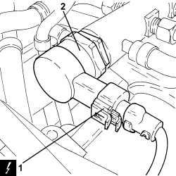

1060G31 FUEL PRESSURE REGULATOR ON SINGLE MANIFOLD TO INJECTORS - R R
- Path
- Procedures > 10 ENGINE > 1060 DIESEL INJECTION SYSTEM > 1060G DIESEL INJECTION PRESSURE PUMP ELECTRONIC CONTROL > 1060G31 FUEL PRESSURE REGULATOR ON SINGLE MANIFOLD TO INJECTORS - R R
- Kind
- repair procedure (removal / refitting; the operation number is the code)
- Applies to
- engines: 1.9 JTD 8v, 1.9 JTD 16v, 2.4 JTD 20v; all production periods
- Interactive page
- https://sloeber94.github.io/elrnDB-fCrm/en/#/194000339
Applies to: engines: 1.9 JTD 16v, 2.4 JTD 20v; all production periods
 Removing
Removing
 Refitting
Refitting- Make sure that the ignition key is in the OFF position, then disconnect the battery terminal (-).
Description | Connector | |
|---|---|---|
- | Battery |
Op. 1016A10 SOUND-PROOFING COVER - R.R
1. Disconnect the electrical connection from the fuel pressure regulator on the injector single manifold.
Description | Connector | |
|---|---|---|
1 | Water in diesel filter sensor |
2. Undo the fuel pressure regulator on the single manifold to the injectors and remove it.

Applies to: engines: 1.9 JTD 16v, 2.4 JTD 20v; all production periods
Refitting
Removing- Place the fuel pressure regulator on the single manifold to the injectors back in its housing and tighten it to the recommended torque.
Component | Fastening | dia | Value (daNm) | Validity |
|---|---|---|---|---|
Fuel pressure regulator on single manifold to injectors | - | M.......... | (fuel manifold side) 8.0 - 9.0 | 1.9 JTD 16v 2.4 JTD 20v |
- Connect the electrical connection to the fuel pressure regulator on the injector single manifold.
Op. 1016A10 SOUND-PROOFING COVER - R.R
- Connect the negative battery terminal.
Applies to: engines: 1.9 JTD 8v; all production periods
Removing
RefittingOp. 5530B52 BATTERY SUPPORT/DRIP TRAY - R.R
Op. 1048B27 RIGID PIPE FOR AIR INLET TO THROTTLE BODY - R R
Op. 1060G50 THROTTLE BODY - R.R
Op. 1080C24 E.G.R. SYSTEM SOLENOID - R + R
Op. 1060F36 PIPES (ALL) FROM FUEL MANIFOLD TO INJECTOR - R.R.
Applies to: engines: 1.9 JTD 8v; all production periods
Refitting
RemovingOp. 1060F30 SINGLE FUEL MANIFOLD PIPE - R.R.
Op. 1060F20 PIPE FROM PRESSURE PUMP TO FUEL MANIFOLD - R.R.
Op. 1060F36 PIPES (ALL) FROM FUEL MANIFOLD TO INJECTOR - R.R.
Op. 1080C24 E.G.R. SYSTEM SOLENOID - R + R
Op. 1060G50 THROTTLE BODY - R.R
Op. 1048B27 RIGID PIPE FOR AIR INLET TO THROTTLE BODY - R R
Topics linked from this page (11)
- 1016A10 SOUND-PROOFING COVER - R.R
- 1048B27 RIGID PIPE FOR AIR INLET TO THROTTLE BODY - R R
- 1060F20 PIPE FROM PRESSURE PUMP TO FUEL MANIFOLD - R.R.
- 1060F30 SINGLE FUEL MANIFOLD PIPE - R.R.
- 1060F36 PIPES (ALL) FROM FUEL MANIFOLD TO INJECTOR - R.R.
- 1060G50 THROTTLE BODY - R.R
- 1080C24 E.G.R. SYSTEM SOLENOID - R + R
- 5530B10 BATTERY - R+R
- 5530B52 BATTERY SUPPORT/DRIP TRAY - R.R
- A001 BATTERY
- K031 WATER IN DIESEL FILTER SENSOR